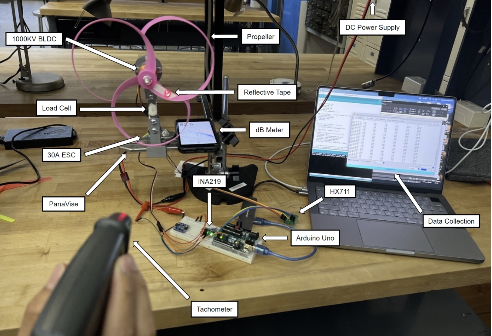

Problem
Evaluate whether a toroidal prop can reduce perceived noise while maintaining or improving efficiency.
Approach
Sensorized thrust stand (load cell), RPM & input power logging, SPL readings; MATLAB post-processing.
Result
Noise ↓ ~3–4 dBA at comparable thrust; efficiency ↑ ~3–6% in mid-RPM range.
Build Notes
- Rig: 1 kg load cell on a compact frame; ESC + power sensing; RPM via tach.
- Method: Step through RPM bands; log thrust, voltage, current, SPL; compute thrust/W.
- Analysis: MATLAB for smoothing, normalization at equal thrust, and efficiency curves.
- Outcome: Toroidal showed modest efficiency gains and lower acoustic levels at mid-thrust.